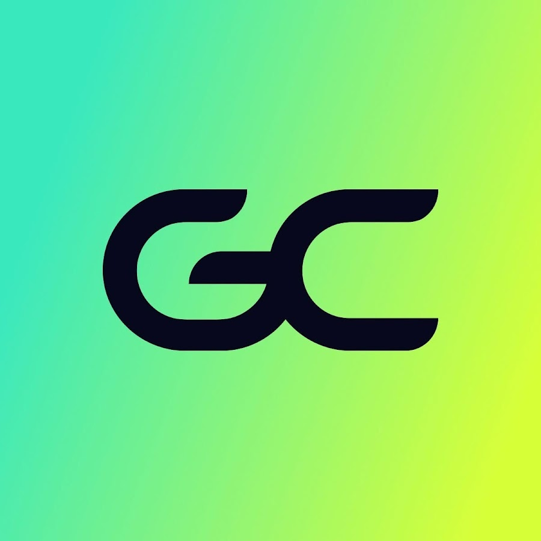
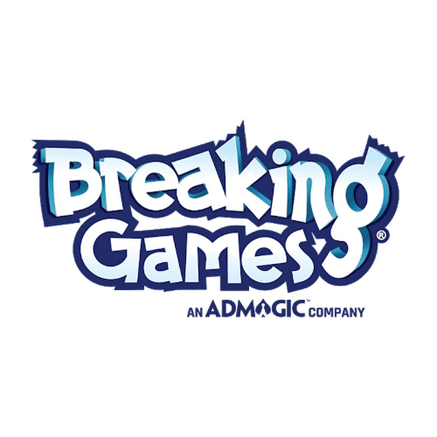

Hi, I'm Katy üëã
I'm passionate about the intersection of people + data + product.
I love digging into user interaction data to find what's really driving their behavior.
My CX experience helps me empathize with people and uncover the human story behind the clicks.
ONGOING
Data Analyst
UCSB Technology Management
Part-Time
Overhauled manual data operations for the undergraduate division, building automated systems and data reporting
to improved efficiency and student satisfaction.
60%
YoY summer enrollment increase (70 → 115)
80%
Process automation
Python
PowerBI
Database Design
Marketing Segmentation
Operations Optimization
My Achievements
üóÑÔ∏è Database:
Built relational database and migrated 10+ years of historical student enrollment data
⚙️ Automation:
Automated administrative update process (from manual), integreate logging
üìä Visualization:
Developed Power BI dashboards enabling stakeholders to track real-time enrollment trends and demographic breakdowns
üéØ Targeted Marketing:
Conducted student segmentation and created targeted email marketing campaigns that increased program enrollment by 60% year-over-year
üöÄ Ongoing Projects:
Conduct enrollment forecasting and faculty demand analysis
Analyze student engagement sentiment and enrollment seasonal trends to recommend course offering strategies
SUMMER 2025

Customer Analytics Intern
GameChanger by Dick's Sporting Goods
3-Month Internship
As the first data hire on the CX team, I built the team's analytical framework from scratch, providing PMs with a new lens into the Voice of the Customer and enabling them with an easier time of incorporating user feedback into their decision-making.
9
Cross-Functional Product teams supported
360M+
Monthly mobile interaction event data points analyzed
3
Product roadmaps influenced
Python
SQL
Looker
NLP/Sentiment Analysis
User Journey Mapping
Snowflake
Data Integration & Modeling (ETL)
Cross-functional Leadership
Data Visualization & Reporting
Advanced Analytics & Deep Dives
User Journey & Friction Analysis

January 2024 - July 2025

Data Journalist
Daily Nexus
Freelance
Built automated data collection pipeline using API calls and web scraping to gather information from campus sources.
Cleaned and analyzed data for journalistic visualization, transforming complex datasets into clear
narratives and graphics. Supported analytical reporting across newspaper sections to ensure data-driven journalism standards.
Python
Data Visualization
Storytelling
API
Web Scraping
ONGOING

E-Commerce Data Analysis & Strategy Project
Breaking Games (via Extern)
Externship Project
Connect ad performance, website behavior, and sales metrics across platforms (Google Analytics, Meta Ads Manager, and Shopify)
to track customer journeys. Identify drop-off points in the sales funnel and recommend strategies to reduce bounce, presenting to
Breaking Game stakeholders.
Python
Customer Journey Analysis
Marketing/Sales Analytics
Stakeholder Presentation
AUG 2025
Operations Strategy & People Analytics Project
Amazon (via Extern)
Externship Project
Analyzed employee feedback to identify workforce risks and operational pain points within Amazon Fulfillment Centers, presenting solutions to company stakeholders.
Python
Sentiment Analysis
Thematic Coding
Stakeholder Presentation
March 2025
SolPower: A Datathon Winning Project
UCSB 2025 DataOrbit Datathon
Competition Project
Built a machine learning model to predict optimal locations for new solar installations, winning the Best Overall (out of 40+ teams) at UCSB's annual datathon.
Leveraged open source datasets such as NASA's climate data and existing solar plant output data. Built a web app to visualize predictions and support decision-making.
Python
Machine Learning
Frontend Development
API Data Collection
Team Leadership
AUG 2025
AUG 2025
Agile Methodology Foundations
LinkedIn Learning x PMI